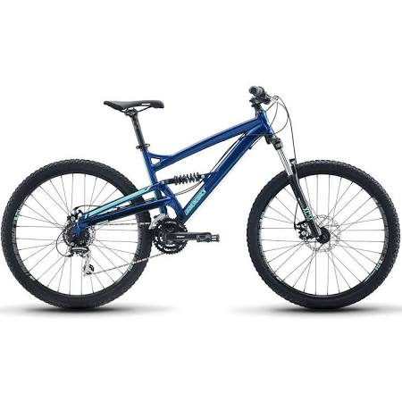

Mountain bike can be very expensive, but we choose the best offers for you !!
Cannondale $815.14
The Cannondale Trail range is a blend of 30 years of top end design and engineering in an affordable package. For people who want to get the best out of their ride on all terrains. The trail range strikes the ideal balance between race-level quickness and confidence-inspiring stability.
GT Pantera elite $909.95
You want a bike that screams to the tune of long days on the trail? GT’s newest addition to the lineup is the Pantera 27.5”+, with oversized tires that are ready to rock every type of terrain you can throw its way. The increased traction gives you the type of cornering and pedaling control you need to ride in almost any condition, putting your skills at center stage.
Diamondback $699.99
The Diamondback Atroz 1 is a full-suspension bike that truly performs and is easy on the wallet. The Atroz has four inches of reliable coil-sprung rear suspension that nicely smooths out the trail. Since you’ll need to climb to the top of the mountain, Diamondback has also given the Atroz a 24-speed Shimano drivetrain, and when it’s time to head back down, you’ll find the Suntour XCM suspension fork and Tektro Aries mechanical disc brakes keep you firmly in control of the descents.
Look for more specifications !
-
Cannondale
-
Cost: $815.14 Type: Mountain Brand: Cannondale Model: 2018 Gender: Unisex Frame: New Trail, SmartForm C2 Alloy, SAVE, BOOST spacing, Tapered Headtube, Flat Mount Rear Brake, Internal Cable Routing. Brakes: Shimano M315 hydro disc, 160/160mm Speed: 10 Suspension: Front Handlebar: Cannondale C3 riser, Alloy, 4° upsweep, 9° backsweep, 760x15mm.
GT Pantera Elite Bike
Cost: $909.95 Type: Mountain Brand: GT Model: 2017 Gender: Unisex Frame: All New 6061 T6 Aluminum Frame, w/ Triple Triangle?, Replaceable Derailleur Hanger, Disc Brake Mounts, and Zerostack tapered Head Tube, 27.5 + Design. Brakes: (FR) SRAM DB-Level Speed: 11 Suspension: Front Handlebar: All Terra Riser Bar, Double Butted, 710mm Width, 15mm Rise, 31.8mm Clamp.
DiamondBack
- 
Cost: $699.99 Type: Mountain Brand: DiamondBack Model: 2018 Gender: Men Frame: Atroz 6061 T-6 Aluminum 27.5 Trail w/ 4" travel, Optimized Single Pivot, Machine Formed Top Tube, Butted / Formed Down Tube, Sealed Cartridge Bearing Pivot, Aggressive Geometry, Replaceable Hanger. Brakes: Tektro Aries Mechanical Disc, w/ 180mm Front and 160mm Rear Rotors. Speed: 24 Suspension: Full Handlebar: Diamondback, 750mm Wide, 15mm Rise, 31.8 Bar Bore.